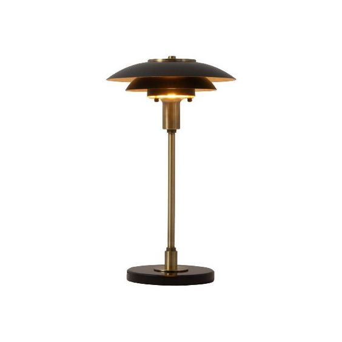
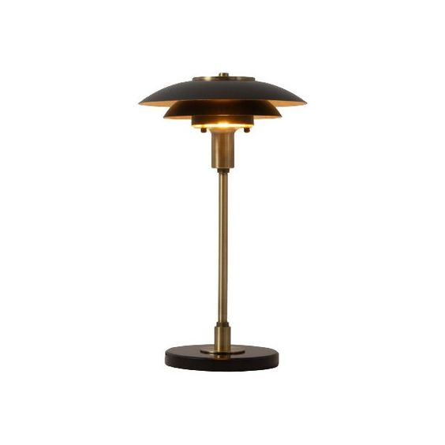
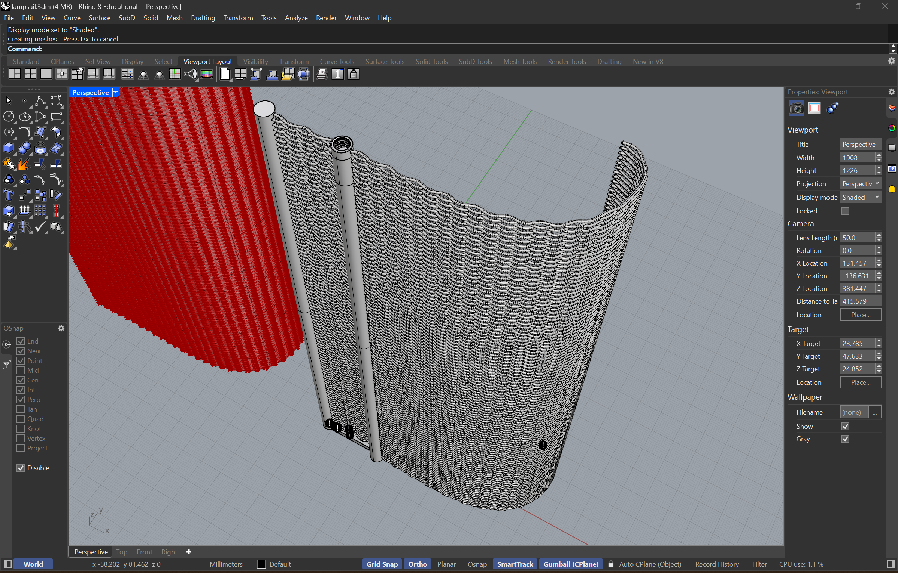

A9: Final Project!
Design and digitally fabricate an object of your choosing using the techniques you have learned in class. It can be any kind of object with any kind of intended audience, but it must follow the plan you presented in proposal week.
Final Prouct:
Concept:
Inspiration:
 

I wanted a modern and homey light that I could alter how much light it admits outwards while I could use it as more focused light for when I'm drawing at night. Because I use a lighbulb that changes color tempreures I would want the light to below to have no barrier to the bulb.
Process:
Redesigning:
Before:
 During the project proposal document it was brought up that the surfaces the bearings would touch are not the ones adding the most friction. Due to this I started to redesign this area to instead use the inner and outer ring to sandwhich the bearings, the inner ring being two layers resting on top and inside of the bearings. Longer screws connecting the inner layers with the rotationg pull to secure it. Looking at the price of the pulls and dealing with two layers I decided to make the groves for contolling panel direction exculsive to top inner panel. Using screws as dowels for the panels. This design removed the shoulder screws of the outer ring as well, using longer screws attaching to internally threaded connecting bars to hold the stucture so the panels can pivot independently without bearing anything but their own weight. The height of the panels and overall structure being limited by the height of the 3D printing be if I choose to puruse printing panels.
During the project proposal document it was brought up that the surfaces the bearings would touch are not the ones adding the most friction. Due to this I started to redesign this area to instead use the inner and outer ring to sandwhich the bearings, the inner ring being two layers resting on top and inside of the bearings. Longer screws connecting the inner layers with the rotationg pull to secure it. Looking at the price of the pulls and dealing with two layers I decided to make the groves for contolling panel direction exculsive to top inner panel. Using screws as dowels for the panels. This design removed the shoulder screws of the outer ring as well, using longer screws attaching to internally threaded connecting bars to hold the stucture so the panels can pivot independently without bearing anything but their own weight. The height of the panels and overall structure being limited by the height of the 3D printing be if I choose to puruse printing panels.2D Modeling:
I used adobe illustrator to design my lazer cuts and check for infererence and spacing. As the lazercuters use illustrator I dont have to worry about importing in into a seperate process and have more control. While it was in this format I was also able to determine the length of the panels and to what degree they would be able to swivel. I had to format the colors of the file differently depending on whcih lazercutter I was using as one determines cut lines based on thickness and the other based on color.
Lazer Cutting:
I used both the lazercutter at the 8 and the mill. The one I used first at the 8 has presets for materials which I used for 1/4" cast acrylic. It produced very clean cuts but the circles ended up being misaligned at the start and end points of the cut, there were also noticable flat edges on the circle. The large Lazer cutter at the mill required manual settings whcih I started with their reccomended 100 power 100 frequency and 2 speed. The lazer did not cut all the way through consistently, thus I would run the cut twice. Because of checking on the material caused a misalignment of the screw holes, I rotated it slightly and recut in the current location as to not waste material. Especially as this was a low visabiltiy area with the uncut side being shown. For the next cuts I used the smaller cutter at the Mill with the same settings and did not have to run cuts multiple times.
Stock Parts:
When the stock parts I was incorperating arrived I realized I ordered the wrong connecting rods, so I proceeded to order new ones. This did mean that I would be adding those last to the stucture, but thankfully I could still test the other aspects of the design. I also figured out one of by lazcut panels for the internal circle needed to be redone due the the size being based off the body of the screw and not the screw head. After cutting that I could try the functionality with my temporary panels which happily worked. I cound then move on with the more advanced panels.
Grasshopper:
I created a surface in the shape I wanted the panel to be in Rhino then used Yubo Zhao's grasshopper code from assignment 6 to create the weaving texture. U:30, V:210, unitize:0.1, B:0.5. I was unsure of how each of the values were altering the model so it took some experimentation to get right. The main things I was looking for were many back and forth curves along the surface with the curves not protruding more than a milimeter or 2 from the surface as to not need support when printing. Each layer of curves needs to slightly overlap at points with the one above and below for being joined in the printing process. The two layers were then baked and boolean unioned.
3D modeling in Rhino:
 After baking I added two support coloumns which will be the lever arm and piviot points for the sails. I used the cad model of the screws from Mcmaster to boolean difference holes for attachemnt in the support structures. In hindsight I should have widened the shape a little more because some screws were too tight for comfort. In my initial sketches I had a scalop edge to my panels but abondoned that due to concerns for suport and wanting to ensure when closed that the lightbulb is blocked from the side.
3D printing:
I orientated the desgin upright in order to get the woven texture of the structure and added some support at the base and a brim for better adherance. I started on a standard print speed to check if the design could print with the overhang of the weaving textures, and if the design could speed or would need something slower. The test printer worked so I decided to print multiple at once so I could leave it to run over night.
 Surprize! This did not work. It tool some trial and error to figure out how to fix, but because the print was almost 9" tall while being pretty skinny the sudden movements across the entire print bed caused the parts to disloge as they got taller. I increased the brim and printed each part induvidually after that, this did lead to a difference in apearence with the parts being more of a gradient than stripes when multiples are printed.
Surprize! This did not work. It tool some trial and error to figure out how to fix, but because the print was almost 9" tall while being pretty skinny the sudden movements across the entire print bed caused the parts to disloge as they got taller. I increased the brim and printed each part induvidually after that, this did lead to a difference in apearence with the parts being more of a gradient than stripes when multiples are printed.Assembly:
 I As mentioned before the screws were a little tight, but that was simple compared to having to dislodge the support that printed inside the screw holes. I ended up having to use an embrodiery needle to coax the filament out after disloging it. I first assembled the two bottom lazercut sections, using the dowel pins to secure the cental structure and the pannels for the larger ring. I was still waiting on the new connecting rods to arrive. The top section was then added to each panel to secure them down. I ended up adding the ball bearings through the holes of the central plate that controls the direction of the pannels, this was done when the pannels were in the setting to allow the most light as the screws would not be blocking access. The ball bearings may have been an overcompensation from the previous wood version, but c'est la vie. I did construct some panels from the misprints, using hot glue after an atempt with superglue failed. I could do this as the print structure above the screw points being identicale except for the top screw. I was okay with this as the panels would be supporting no weight as a pivot point, and there was a hole the screw could fit in for the pivot.
I As mentioned before the screws were a little tight, but that was simple compared to having to dislodge the support that printed inside the screw holes. I ended up having to use an embrodiery needle to coax the filament out after disloging it. I first assembled the two bottom lazercut sections, using the dowel pins to secure the cental structure and the pannels for the larger ring. I was still waiting on the new connecting rods to arrive. The top section was then added to each panel to secure them down. I ended up adding the ball bearings through the holes of the central plate that controls the direction of the pannels, this was done when the pannels were in the setting to allow the most light as the screws would not be blocking access. The ball bearings may have been an overcompensation from the previous wood version, but c'est la vie. I did construct some panels from the misprints, using hot glue after an atempt with superglue failed. I could do this as the print structure above the screw points being identicale except for the top screw. I was okay with this as the panels would be supporting no weight as a pivot point, and there was a hole the screw could fit in for the pivot. Source Files:
For Lazercuts:
For 3D printed sails:
Rhino file
Rhino file
Files used:
Yubo Zhao's grasshopper code: https://reanqbow.github.io/a5.html
Screw cad: https://www.mcmaster.com/91772A197/